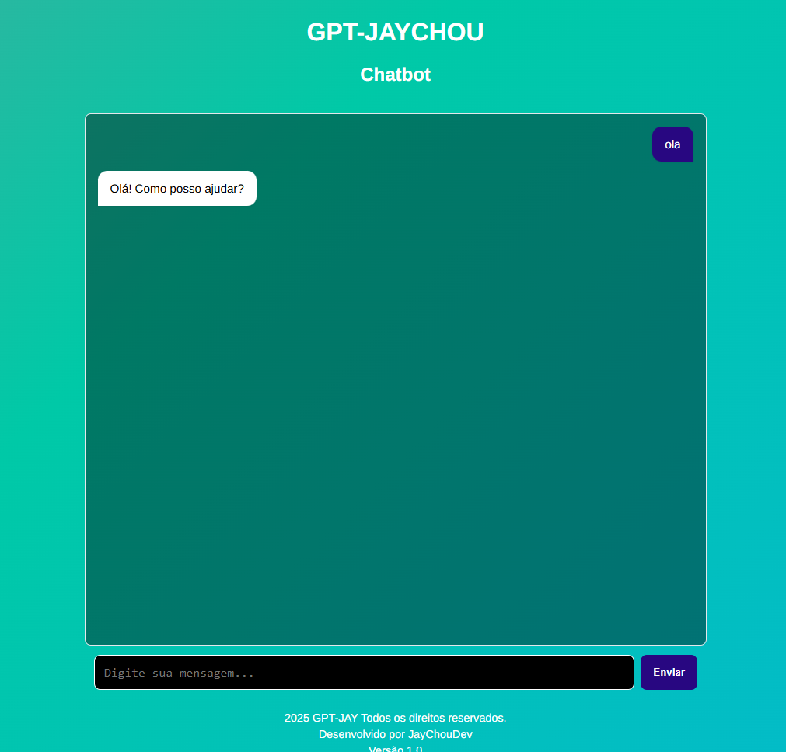

Meus Projetos Pessoais

ChatBot
Projeto com API da Punter
Mini Portfólio
HTML & CSS puro
Kanban
Organização de estudos
IMC
Validação de dados em JavaScript
CineVerse
Uma interface que busca Filmes, Series e Games